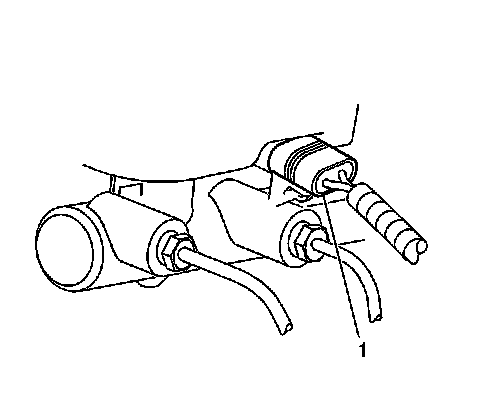
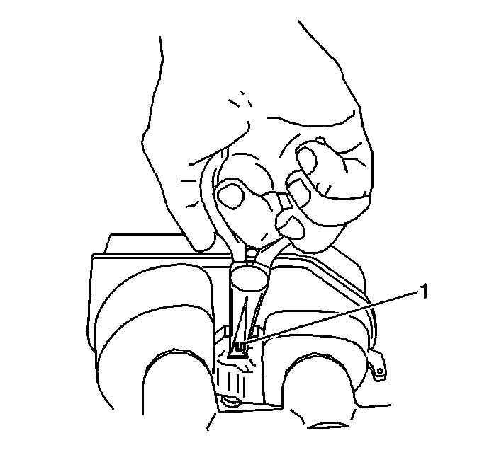
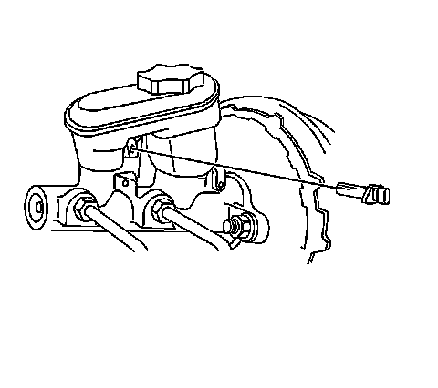

Brake Fluid Level Sensor/Switch: Service and Repair
Brake Fluid Level Indicator Switch Replacement
Caution: Refer to Brake Fluid Irritant Caution (Brake Fluid Irritant Caution) .
Notice: Refer to Brake Fluid Effects on Paint and Electrical Components Notice (Vehicle Damage Warnings) .
Removal Procedure

1. Disconnect the electrical connector (1) from the brake fluid level sensor.

2. Using a needle nose pliers carefully depress the retaining tabs (1) on the end of the brake fluid level sensor and press the sensor through the reservoir to remove.
Installation Procedure

1. Align the brake fluid level sensor to the master cylinder reservoir.
2. Press the brake fluid level sensor into the master cylinder reservoir.
3. Connect the electrical connector to the brake fluid level sensor.